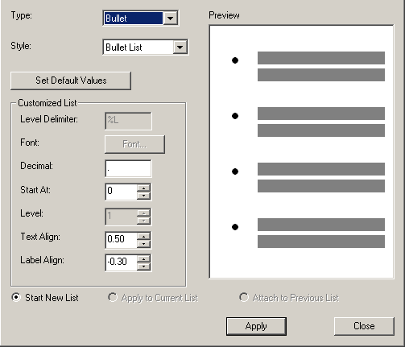
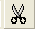
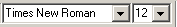
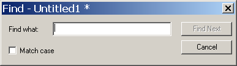
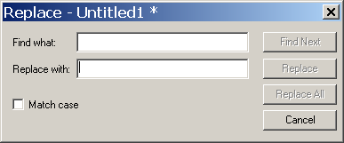

Welcome to AbiWord's tutorial for writing a Resume. With this tutorial we will help you to create a Resume, and will also help you to become familiar with the functions associated with AbiWord. We will do this by using a task oriented style that focuses on you, the student/casual user. This tutorial expands on the previous section of "Writing a Letter", so if you are not familiar with opening a new document, please select the link and review the task.
As mentioned above, you will perform some of the same functions that were taught in "Writing a Letter". To avoid redundancy, we will not cover those tasks in this tutorial. What we will focus on is cut, copy and pasting, using bullets and numbering, changing the font, and finding and replacing text. You may select the following links to view these functions, or you may follow along in the Resume to get more in depth instruction.
Start creating your Resume by opening a new document.
Create a heading by typing your name, address, telephone number, and email, if applicable. If you have this information on your computer you can just cut, copy, and paste the information into your document. To do this just follow the instructions below.

Now is an opportune time to show you how to create bullets. To create bullets in your Resume following the instructions below.

To use numbers instead of bullets do the following.
Next, you will want to create an objectives section. This section states the reason why you have written your Resume. You will follow this section with several pertinent topics. Some examples are Education, Related Experience, and Work History to name a few. To make your Resume look visually appealling you should work with different fonts.
You should use different fonts for headings and body text in your Resume. For example, use sans serif fonts for headings and serif fonts for text in the body of your document. To change the fonts in your Resume do the following.

You are ready to continue creating your Resume with a different font.
Use the Find and Replace functions to help you find a specific word or phrase within your document. Or, you can replace a word with a new word.

The "Replace" function will replace a word in your document.

Congratulations! You have just completed replacing text, and the Resume Tutorial.